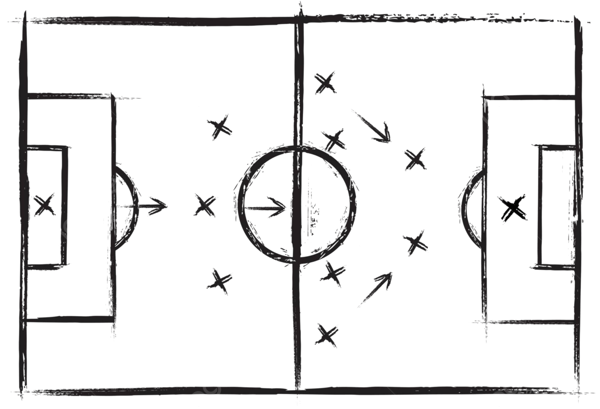

El dominio de los fundamentos técnicos es la piedra angular sobre la que se construye el rendimiento de un futbolista. Estas habilidades permiten al jugador interactuar con el balón de manera efectiva, ejecutar acciones de juego con precisión y tomar decisiones rápidas y acertadas en el campo. Un entrenamiento técnico sólido, desde las categorías infantiles hasta el profesionalismo, es indispensable para el desarrollo integral del deportista.

1. El Control del Balón: La Primera Interacción
El control del balón es la habilidad más básica y, a la vez, una de las más importantes. Permite al jugador poseer el esférico, protegerlo y prepararlo para la siguiente acción.
- Conducción (Dribbling):
- Definición: Movimiento del balón pegado al pie mientras el jugador se desplaza.
- Técnica: Utilizar la parte interna y externa del pie para mantener el balón cerca. Mantener la cabeza levantada para tener visión del campo. Variar la longitud del toque según la velocidad y el espacio.
- Variantes: Conducción en carrera (larga distancia), conducción en espacios reducidos (cambios de dirección, fintas), conducción con ambas piernas.
- Ejercicios: Slaloms entre conos, conducción en línea recta variando velocidad, conducción con obstáculos, ejercicios de conducción con oposición.
- Objetivo: Desarrollar la sensibilidad con el balón, mejorar la agilidad y la capacidad de avance con el esférico.
- Recepción y Amortiguación:
- Definición: Acción de recibir un balón en movimiento y controlarlo para detenerlo o prepararlo para la siguiente acción.
- Técnica: Utilizar la superficie del cuerpo más adecuada para amortiguar la fuerza del balón (muslo, pecho, empeine, planta). Flexionar ligeramente la rodilla y el tronco para absorber el impacto. Orientar la recepción hacia el espacio deseado.
- Superficies de Contacto:
- Pie: Empeine (para balones aéreos o rasos), planta (para control cercano y protección), interior/exterior (para recepciones más suaves).
- Muslo: Ideal para balones a media altura, amortiguando y bajando el balón al suelo.
- Pecho: Para balones aéreos más altos, permitiendo bajar el balón con suavidad.
- Ejercicios: Recepción de pases de compañeros o lanzamientos, control orientado tras la recepción, recepciones en movimiento, recepciones bajo presión.
- Objetivo: Minimizar el tiempo de contacto con el balón, mantener la posesión y preparar la acción siguiente de forma fluida.
- Control Orientado:
- Definición: Combinación de la recepción y la conducción en un solo movimiento. El balón se recibe y se dirige hacia el espacio donde se desea continuar la jugada.
- Técnica: Al contactar el balón para recibirlo, se aplica una ligera fuerza en la dirección del desplazamiento deseado. Requiere anticipación y visión de juego.
- Ejercicios: Se integra en casi todos los ejercicios de pase y conducción. Por ejemplo, recibir un pase y orientarlo hacia un cono o hacia el espacio libre.
- Objetivo: Acelerar el juego, evitar perder tiempo en recepciones pasivas y sorprender al rival.
2. El Pase: Conectar y Crear Juego
El pase es la herramienta fundamental para la circulación del balón y la construcción del juego colectivo. Un buen pasador es vital para cualquier equipo.
- Tipos de Pase:
- Pase Corto (Toque): Generalmente con la parte interna del pie. Preciso, rápido y para mantener la posesión.
- Pase Largo (Cambio de Juego): Con el empeine o el interior del pie. Para desplazar el balón a otras zonas del campo, cambiar de orientación o buscar a un compañero desmarcado.
- Pase al Hueco: Pase con profundidad, buscando que el receptor corra hacia el balón en una zona libre. Requiere gran precisión y lectura del juego.
- Pase de Exterior/Interior: Utilizando estas superficies para dar efectos o realizar pases más sorpresivos.
- Pase de Tacón/Chilena: Pases técnicos y creativos, generalmente en situaciones de poca opción o para sorprender.
- Técnica del Pase:
- Punto de Apoyo: El pie no dominante se coloca firmemente al lado del balón, a la altura adecuada.
- Golpeo: El contacto con el balón se realiza con la superficie del pie deseada (interior para precisión, empeine para potencia). El movimiento de la pierna debe ser fluido y acompañar el golpeo.
- Trayectoria: Adaptar la altura y la potencia del pase a la distancia y a la situación del receptor y los rivales.
- Visión: Mirar al receptor y anticipar su movimiento.
- Ejercicios:
- Pases entre dos jugadores (paredes).
- Pases en rombos o cuadrados con diferentes distancias.
- Ejercicios de control orientado y pase.
- Juegos de posición (rondos) donde el pase es la clave.
- Pases largos a objetivos o compañeros en movimiento.
- Objetivo: Mejorar la precisión, la potencia, la elección del pase adecuado y la velocidad de circulación del balón.

3. El Tiro a Portería: La Culminación de la Jugada
El gol es el objetivo principal del fútbol, y la capacidad de finalizar las jugadas con un tiro efectivo es crucial para cualquier jugador ofensivo.
- Tipos de Tiro:
- Tiro con el Empeine (Chut): El más potente. Se utiliza para disparos lejanos o cuando se busca mucha fuerza. Requiere una técnica depurada para asegurar la dirección.
- Tiro con el Interior: Más preciso y controlado. Ideal para colocar el balón cerca de los postes o en situaciones de uno contra uno.
- Tiro con el Exterior: Menos común, se usa para dar efectos o en situaciones de emergencia.
- Tiro de Volea: Golpear el balón antes de que toque el suelo. Requiere gran coordinación y timing.
- Remate de Cabeza: Utilizar la frente para dirigir el balón, especialmente en centros o saques de esquina.
- Técnica del Tiro:
- Carrera de Aproximación: Adaptar la longitud y velocidad de la carrera a la situación.
- Apoyo: El pie no dominante se coloca firme y cerca del balón, apuntando a la dirección deseada.
- Impacto: Contactar el balón con la parte correcta del pie (empeine para potencia, interior para colocación). El cuerpo debe estar equilibrado y ligeramente inclinado sobre el balón.
- Seguimiento (Armónico): El movimiento de la pierna debe continuar después del impacto, dirigiendo el golpeo.
- Cabeza: Utilizar la frente, mantener los ojos abiertos y el cuello firme. El movimiento del cuerpo acompaña el impulso.
- Ejercicios:
- Tiros a portería desde diferentes distancias y ángulos.
- Tiros tras conducción o control orientado.
- Tiros de volea y remates de cabeza tras centros.
- Situaciones de uno contra uno contra el portero.
- Tiros de calidad (colocación) frente a tiros de potencia.
- Objetivo: Mejorar la precisión, la potencia, la efectividad en diferentes situaciones y la capacidad de definir ante el portero.

4. El Regate y la Finta: Superar al Adversario
El regate y la finta son herramientas para desequilibrar a los defensores, crear espacios y generar oportunidades de gol.
- Regate:
- Definición: Acción de llevar el balón pegado al pie, superando a un oponente mediante cambios de dirección, velocidad o habilidad con el balón.
- Técnica: Mantener el balón cerca, usar el cuerpo para protegerlo, cambios de ritmo y dirección explosivos. Requiere agilidad y control del balón.
- Finta:
- Definición: Movimiento engañoso, con o sin balón, para hacer creer al oponente que se realizará una acción diferente a la que realmente se va a ejecutar.
- Tipos: Fintas de cuerpo, fintas de pierna, amagues de disparo, amagos de pase.
- Ejecución: Deben ser rápidas, claras y seguidas de una acción real (regat, pase, tiro).
- Ejercicios:
- Ejercicios de regate con conos o aros.
- Práctica de fintas específicas (ej. bicicleta, elástica, amago de tiro).
- Situaciones de uno contra uno, donde el objetivo es superar al defensor.
- Combinación de regate y finta para crear espacio.
- Objetivo: Desarrollar la habilidad para el uno contra uno, la creatividad en el juego y la capacidad de desequilibrar defensas.

Conclusión
El entrenamiento de los fundamentos técnicos debe ser una constante a lo largo de la carrera de un futbolista. La repetición, la corrección de errores y la adaptación a diferentes situaciones de juego son clave para que estas habilidades se conviertan en acciones naturales y efectivas en el terreno de juego. Un jugador con una base técnica sólida tendrá un mayor potencial para desarrollarse en todos los demás aspectos del juego.
|